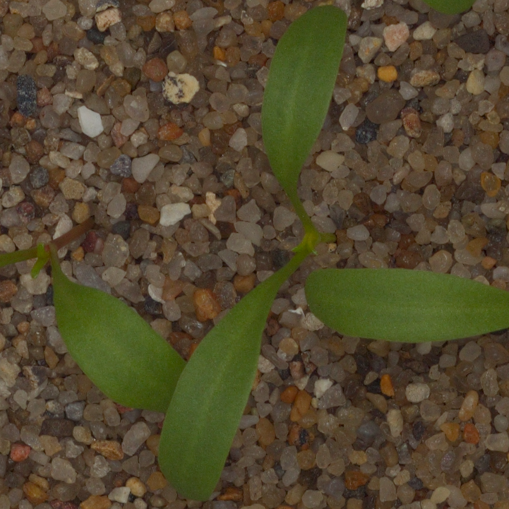
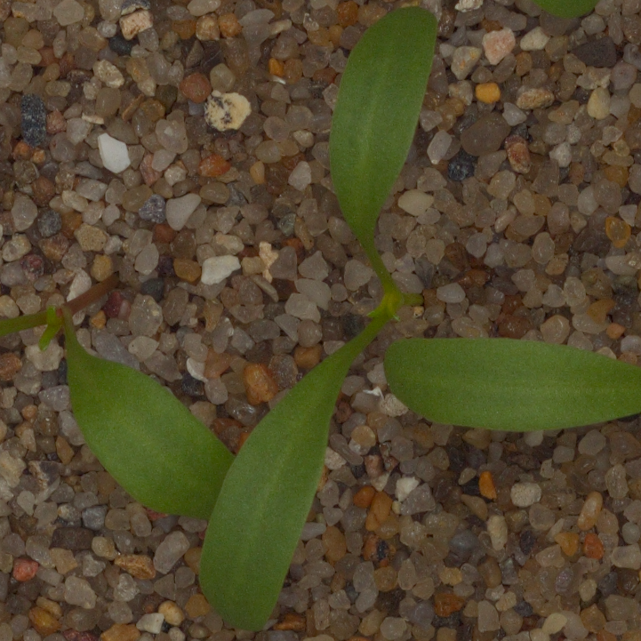

This model was trained on the dataset that contains 5,539 images of crop and weed seedlings.
The images are grouped into 12 classes.
These classes represent common plant species in Danish agriculture at different growth stages.
A pretrained ResNet34 model was fine-tuned using fastai vision library. The error rate achived on the validation dataset is 2.5% after 4 epochs.
Currently the model does not generalize well on the out-of-domain images. Probably because of the specificity of the dataset.
The images in the dataset are of a single plant taken from the top and on a single background of a grit surface. Some images have barcode labels that might be unique to the particular plant.
The last two images in the examples are not from the dataset. They are getting wrongly classified as
Scentless Mayweed even though they are
Small-flowered Cranesbill (compare with the second image in the examples)
Blog post
 
